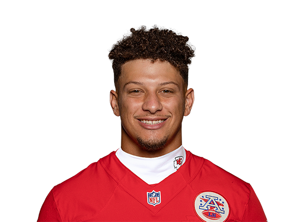

Patrick Mahomes es un mariscal de campo estrella de la NFL, conocido por su talento, precisión y jugadas espectaculares. Nació en 1995 y juega para los Kansas City Chiefs, equipo con el que ha ganado múltiples Super Bowls. Destaca por su fuerte brazo, creatividad en el campo y liderazgo. Ha sido nombrado MVP de la NFL en varias ocasiones y es considerado uno de los mejores jugadores de su generación.
Lamar Jackson es un mariscal de campo dinámico de la NFL, conocido por su increíble velocidad, agilidad y capacidad para hacer jugadas tanto con el brazo como con las piernas. Nació en 1997 y juega para los Baltimore Ravens, equipo con el que ganó el premio de MVP de la NFL en 2019. Es uno de los quarterbacks más electrizantes de la liga, rompiendo récords de yardas terrestres y demostrando que puede dominar el juego tanto como pasador como corredor.
Josh Allen es el mariscal de campo estrella de los Buffalo Bills, reconocido por su fuerte brazo, movilidad y capacidad para hacer jugadas bajo presión. Nació en 1996 y ha llevado a los Bills a múltiples apariciones en los playoffs, consolidándose como uno de los mejores quarterbacks de la NFL. Su combinación de físico, precisión y liderazgo lo ha convertido en una pieza clave para su equipo, siendo comparado con algunos de los mejores pasadores de la liga.
Peyton Manning es una leyenda de la NFL y uno de los mejores mariscales de campo de la historia. Nació en 1976 y jugó para los Indianapolis Colts y los Denver Broncos, ganando dos Super Bowls y cinco premios de MVP de la NFL, un récord en la liga. Era conocido por su inteligencia en el campo, su precisión en los pases y su capacidad para leer defensas. Se retiró en 2016 y fue incluido en el Salón de la Fama del Fútbol Americano Profesional en 2021.
 Index
Index